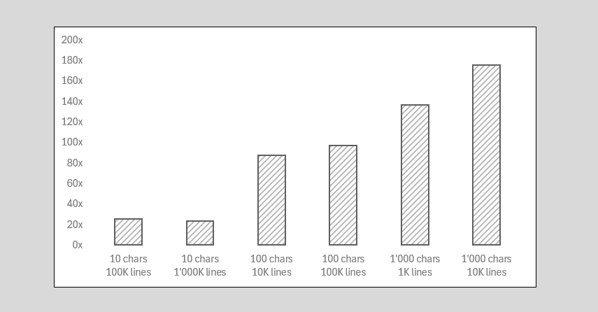

One day Bob got a task to process a text file line by line. He decides to use C++, as he knows that not many languages out there can compete with its speed. As C++ is still an uncouth beast for Bob, he decides to ask Google ChatGPT about the most popular approach to read a file line by line in C++, to have some initial code for start and avoid fluttering through the endless pages of C++ Standard Library documentation.
Bob is a junior developer with big ambitions. He is serious about his craft and reputation, so he really wants to make sure that his code is tasty – fast, elegant, and the best of its kind.
Bob is happy to share his final code on GitHub in TextFileReader.h, which you can use in your projects.
Read Lines – ChatGPT Solution
When Bob asked Google ChatGPT for the most popular approach to read a file line by line in C++, the solution was based on std::getline() function from the Standard Library.
Here is exactly how proposed solution looked like:
1#include <iostream>
2#include <fstream>
3#include <string>
4
5int main() {
6 std::ifstream file("example.txt"); // Open the file
7
8 if (file.is_open()) { // Check if the file is opened successfully
9 std::string line;
10 while (std::getline(file, line)) { // Read each line of the file
11 std::cout << line << std::endl; // Print the line
12 }
13 file.close(); // Close the file when done
14 } else {
15 // Print error message if file cannot be opened
16 std::cerr << "Unable to open the file." << std::endl;
17 }
18
19 return 0;
20}
ChatGPT’s take on “How to read a file line by line in C++ ?”
Bob knows that ChatGPT solution is slow, because every line in this solution is returned by copy. Bob is going to fix this and find more optimal approach.
Read Lines – Tasty Solution
Bob found out that in C++, instead of a constant std::string object, that he has no intention to modify, he can return std::string_view — a lightweight object that was introduced in C++17 to avoid copying of constant strings. Internally, a std::string_view occupies only 16 bytes and contains two member fields:
a pointer to the string a size of the string Next morning, after thinking before falling asleep, Bob has a concrete plan in his mind that goes as following:
Notice how carefully Bob treats incomplete lines at the end of the buffer, which require special attention. He postpones these peculiarities for later. For now, Bob is more concerned about how his class is supposed to be used by his peers.
Usage Workflow
Bob knows that user experience and convenient public interface is as important as fast and safe code. Before starting to code, he wants to decide on how his code will be used or how people call it – public interface.
Instead of inventing a wheel Bob decides to follow a common usage pattern suggested by ChatGPT, which goes along the following lines:
1TextFileReader src;
2if (Error err = 1️⃣ src.open("stocks_20240310.csv"); !err.empty())
3 return err;
4
5Error err;
6while (2️⃣ src.readline(err)) {
7 // Process 3️⃣ src.line()
8}
9if (!err.empty())
10 return err;
Process a text file by lines in C++
1️⃣ open() Usually, we start with opening the file given its path. This step might fail for various reasons, hence Bob wants to indicate this. If an issue occurs he will return a string that describes it, for example “File doesn’t exist” or “Too many open files”. This is not the perfect way to indicate an error, but he’s fine with it for now.
2️⃣ readline() loop is identical to std::getline() except that we access a current line with3️⃣line(), which returns std::string_view to the internal buffer. It’s efficient as no copying happens.
Bob also finds it useful if his users can read a file in fixed-sized chunks, without splitting by a newline. Hence, he offers an alternative for steps 2️⃣ and 3️⃣ that looks like this:
1Error err;
2while (4️⃣ src.read(err)) {
3 // process 5️⃣ src.buf();
4}
Process a text file by fixed-size blocks in C++
4️⃣ read() takes next chunk of data into the internal buffer. We can read this buffer with 5️⃣TextFileReader::buf() method, which returns a lightweight string view without copying.q
TextFileReader in Depth
Finally, as Bob has a more clear vision for his solution, it’s now time to start coding.
Core Methods
readline() method is a central point of the entire class. It defines what other methods and data members should the class contain. Intuitively, Bob knows that any other method is useless unless he has readline() ready.
After about an hour of prototyping, he wraps everything into the following five-step function:
1bool
2TextFileReader::readline(Error& err)
3{
4 do {
5 // 1️⃣ Find next \n char
6 if (const auto p = (c8*)memchr(m_buf + m_cursor, '\n', m_size - m_cursor); p) {
7 m_line = string_view(m_buf + m_cursor, p - (m_buf + m_cursor));
8 m_cursor = p - m_buf + 1;
9 return true;
10 }
11
12 // 2️⃣ No \n found
13 if (std::feof(m_src)) {
14 m_line = string_view(m_buf + m_cursor, m_size - m_cursor);
15 return m_cursor < m_size;
16 }
17
18 // 3️⃣ Copy tail to the beginning
19 if (m_cursor < m_size) {
20 std::memcpy(m_buf, m_buf + m_cursor, m_size - m_cursor);
21 }
22
23 // 4️⃣ Consume more data (do not update m_cursor)
24 if (err = read(m_size - m_cursor); !err.empty()) {
25 err = "TextFileReader::readline : " + err;
26 return false;
27 }
28 } while (m_size);
29
30 // 5️⃣ We should have already returned false in ❷ (indicating EOF)
31 err = "TextFileReader::readline : EOF";
32 return false;
33};
read() is a helper method that reads chunks of the text file into the internal buffer. Bob implements it as following:
1bool
2TextFileReader::read(Error& err, u64 pos = 0)
3{
4 if (m_size = std::fread(m_buf + pos, 1, m_capacity - pos, m_src); !m_size) {
5 if (std::ferror(m_src)) {
6 err = "Fail to read : errno = " + std::to_string(m_size);
7 return false
8 }
9 }
10
11 m_size += pos;
12 m_cursor = 0;
13
14 return true;
15};
Bob believes that his users will find this feature useful. He exposes it as a public method. However, simultaneously reading a file by chunks and by line breaks internal state of his class. He makes sure to warn users about this in the documentation:
Mixed usage of read() and readline() is prohibited. You should call only one of them after the TextFileReader has been initialized.
Auxiliary Methods
Remaining methods are responsible for managing resources: the FILE object and the internal memory buffer, which should be allocated and deallocated. This is what open() and close() methods do.
close() call is optional. It will be called automatically by the destructor or open() method, which reuses already allocated buffer to read a new file. This improves usability and makes our class safer. It’s a good example of the RAII idiom in action.
Alice, Bob’s more experienced colleague, suggest Bob to disable a default copy constructor (or implement a custom one, but she believes this is an overkill for this task). She says that a default copy constructor duplicates pointers to the internal buffer, but not the buffer itself. This eventually corrupts internal state of the class when duplicated readers fill internal buffers from the same FILE object.
Benchmarks
Bob is curious to compare his code against the std::getline approach proposed by ChatGPT. He creates a bunch of files with line length from 10 to 1'000 and number of lines from 1'000 to 1'000'000.

Surprisingly, his code is at least 20x faster than std::getline, sometimes it’s even 180x faster. “Not bad for an amateur!” – he shouts, proud of himself.
“This is a good example of how important it is to benchmark your code and operate with concrete measurements when designing a final solution” – he says to Alice.
Final Word
I’m in a mood to write a philosophical summary. Given the context it might be inappropriate, but this is my blog after all, so if I can’t be open here, how can I expect the same from you and other readers ?
The moral of this story is not that we can read files 100x faster. (Of course this is an important takeaway too.) The main point is to engineer your own solutions even for very simple tasks, at least to think about a possible solution. This is the most efficient way to learn – learn by doing. You can learn C++ Standard by heart, but you’ll never learn by heart how to engineer. This is a practical skill and is earned by engineering your own way, even if this is not the most efficient way with at first. Eventually, you’ll improve, your thinking will improve, and your code will improve.
Have fun with code!😏